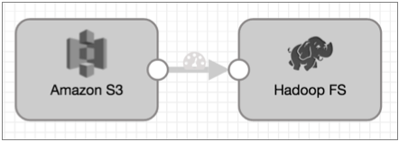

You can use the whole file data format to move entire files from an origin system to a destination system. With the whole file data format, you can transfer any type of file. You cannot perform additional processing on whole file data in the pipeline.
When moving whole files, Data Collector streams file data from the origin system and writes the data to the destination system. Data Collector writes the files based on the directory and file name defined in the destination.
You can limit the resources used to transfer data by specifying a transfer rate. By default, whole file transfers use available resources as needed.
When the origin system provides checksum metadata, you can configure the origin to verify the checksum. Destinations that generate events can include checksum information in event records.
Most destinations allow you to define access permissions for written files. By default, written files use the default permissions of the destination system.
A pipeline that processes whole files include an origin and one or more destinations that support the whole file data format.
You can include certain processors to read the file data or to modify file information included in the record, such as the file name or size. You cannot use processors to transform data in the file.
Here's a basic pipeline that moves whole files from Amazon S3 to HDFS:

You can use certain processors in a whole file pipeline to read the file data in the fileref field or to modify file information in the fileInfo field, such as the file owner or permissions.
By default, the pipeline uses all available resources to transfer whole file data. Define a transfer rate to limit the resources that a whole file pipeline uses. For example, you might specify a transfer rate to enable running multiple whole file pipelines simultaneously or to reserve resources for other processing.
Specify a transfer rate by configuring the Rate per Second property in the origin, in the whole file data format properties.
The Rate per Second property is not used by default, allowing the pipeline to use all available resources. If you specify a transfer rate, the unit of measure is bytes per second by default. You can use a different unit of measure per second by using the unit of measure in an expression.
For example, if you enter 1000, then the pipeline uses a transfer rate of 1000 bytes/second. To specify a rate of 10 MB/second, you can use the following expression: ${10 * MB}.
When writing whole files, you configure a File Name Expression property in the destination. The expression defines the name for the output file.
Each whole file origin includes file information in the fileInfo fields. So you can easily base the output file names on the original file names from the source system.
The following table lists the field names that hold the input file name for each origin, and a basic expression that names the output file based on the input file name:
| Origin | File Name Field Path | Base Expression |
|---|---|---|
| Directory | /fileInfo/filename | ${record:value('/fileInfo/filename')} |
| SFTP/FTP | /fileInfo/filename | ${record:value('/fileInfo/filename')} |
| Amazon S3 | /fileInfo/objectKey | ${record:value('/fileInfo/objectKey')}* |
| * Note that the objectKey field can include a field path as well as a file name. Use this expression when the objectKey is just a file name. | ||
You want a pipeline to pass whole files from a local directory to Amazon S3. For the output file name, you want to append the .json file extension to the original file name.
${str:concat(record:value('/fileInfo/filename'), ".json")}
${record:value('/fileInfo/filename’)}.json
By default, when using the whole file data format, output files use the default access permissions defined in the destination system. Most destinations allow you to specify access permissions for output files. Amazon S3 does not allow it.
You can enter an expression to define access permissions. Expressions should evaluate to a symbolic or numeric/octal representation of the permissions you want to use. For example, to make files read-only for all users, the symbolic representation is -r--r--r--. The numeric or octal representation is 0444.
${record:value('/fileInfo/permissions')}
This ensures, for example, that a source file with execute permission for only the file owner is written to the destination system with the exact same set of permissions.
Destinations that generate events can include a checksum for each file.
When you enable checksum use, the destination includes the checksum and the checksum algorithm in the whole file event record. Whole file event records are generated each time the destination completes writing a whole file.
For details about event generation and event records for a specific destination, see the destination documentation. For generation information about the event framework, see Dataflow Triggers Overview.